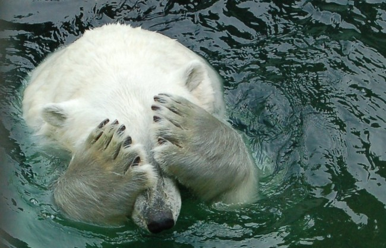

Este poate cel mai vizibil efect al incalzirii globale.Straturile imense din Arctica se micsoreaza anual. Multi ghetari - urisase fluvii de gheata care se revarsa incet pe coastele muntilor - dispar aproape complet. Topirea lor contribuie la ridicarea nivelului marilor care ar putea inunda tarmurile si distruge casele din zonele mai joase.
Nivelul marilor a crescut cu aproximativ 200mm in ultimii 100 de ani. Poate ca nu pare mult, dar cum oceanele se incalzesc si ghetarii se topesc, nivelul lor va continua sa creasca tot mai repede. Destul de curand, inundatiile vor ameninta sate si orase mici si mari aflate la tarmuri, si tot felul de insule Daca nivelul marilor va continua sa creasca in acelasi ritm, el va ajunge cu 480mm mai mare pana in anul 2100.
Modificarile climatice pot cauza ploi puternice si secete grave. Ne confruntam cu efectele precipitatiilor in crestere in unele regiuni si in scadere in altele. Unii oameni de stiinta prognozeaza ca incalzirea globala va face ca regiunile umede sa devina si mai umede, iar regiunile uscate si mai uscate. Si, odata cu cresterea temperaturii apelor, problemele climatice existente - seceta, desertificarea si inundatiile - vor deveni mai frecvente si mai distrugatoare.
Multi savanti considera ca putem sa vedem semnele schimbarilor climatice sub forma conditiilor meteo extreme din toata lumea. Uraganele incendiile din paduri si alte dezastre legate de vreme au avut loc dintotdeauna, dar unele par sa se intensifice si sa devina mai frecvente odata cu incalzirea atmosferei Pamantului si a oceanelor.
Cresterea temperaturii globale urmeaza sa produca o multiplicare a bolilor infectioase. Inundatiile pot cauza boli, cum ar fi febra tifoida si holera care se transmit prin intermediul apei. De asemenea, poate creste si numarul insectelor purtatoare de boli care se pot deplasa in regiuni mai calde si pot raspandi boli cum ar fi malaria si encefalita in locuri unde nu existau.
De-a lungul timpului, specii de plante si animale au disparut mereu. Dar in prezent speciile dispar intr-un ritm intre 100 si 1000 de ori mai rapid decat cel natural si aceasta datorita activitatilor omului. Desi vanatul si distrugerea habitatelor joaca un rol semnificativ, schimbarile climatice si problemele pe care le produc, cum ar fi temperaturile crescute, modificarea precipitatiilor si conditiilor medii extreme, agraveaza situatia.